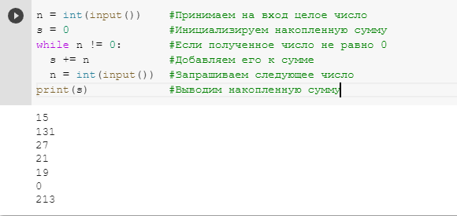

Введение
ВведениеЦиклические алгоритмы
План-конспект урока:
- Тема урока:Циклические алгоритмы
- Цели и задачи урока:
- Образовательные: познакомить школьников циклическими алгоритмами, рассказать про циклы с заданным числом повторений и циклы с условием, объяснить как циклы устроены в Python, а также научить составлять постейшие циклические алгоритмы.
- Развивающие: развить у детей логическое, алгоритмическое и абстрактное мышление.
- Воспитательные: пробудить у детей интерес к данной теме и ко всему предмету информатики в целом.
- Этапы урока:
- организационный
- этап усвоения новых знаний
- первичное закрепление темы
- практическая часть
- обобщение полученных знаний и подведение итогов
- Ход урока:
- Организационный этап. Учитель приветствует учеников и даёт им немного времени для того, чтобы подготовить рабочее место и настроиться на урок.
- Этап усвоения новых знаний. Учитель рассказывает, что такое цикл и циклические алгоритма. Далее учитель объясняет, какте бывают циклы в языке программирования Python, показывает как они устроены. Затем, для лучшего усвоения знаний, учитель разрабатывает несколько простейших циклических алгоритмов на языке Python для того, чтобы учащиеся лучше усвоили новый материал. Дети ведут конспект и записывают ключевые моменты урока.
- Первичное закрепление знаний. Учитель задаёт ученикам устные вопросы по теме. Если ученики затрудняются на них ответить, учитель возвращается к объяснению темы.
- Практическая часть. Учитель предлагает детям решить несколько задач, и в случае возникновения сложностей помогает их разрешить.
- Обобщение полученных знаний и подведение итогов. Учитель кратко повторяет основные моменты урока, оценивает результат выполнения практических задач и задаёт домашнее задание.
Теоретический материал
Многие задачи для своего решения требует повторения одних и тех же действий, возможно с небольшими изменениями. Чтобы не писать много повторяющегося кода были придуманы циклы.
Цикл - вид управляющей конструкции в языках программирования. Он позволяет организовать многократное исполнение определённого набора инструкций (последовательность действий, при котором выполняется тело цикла).
Тело цикла - последовательность инструкций, обеспечивающая их многократное исполнение.
Итерация - однократное исполнение тела цикла.
Циклический алгоритм – описание действий, которые должны повторяться указанное число раз или пока не выполнено заданное условие.
Из определения циклического алгоритма можно понять, что существуют два вида цикла: цикл с фиксированным числом повторений и цикл с условием. Рассмотрим сначала цикл с условием.
В языке программирования Python для того, чтобы описать цикл с условие используется следующая конструкция: while (условие): тело цикла
Когда интерпретатор языка увидит ключевое слово while, он проверит, выполняется ли условие в скобках. Если условие выполняется, интерпретатор начнёт прострочка выполняться команды и тела цикла, пока не дойдёт до конца. Когда он дойдёт до конца, он вновсь вернётся к ключевому слову while и проверить условие. Если условие не выполняется интерпретатор продолжил выполнять программу, пропустив цело цикла, в противном случае - повторит действия в теле цикла.
Важно понимать, что если условие входа в цикл будет верно всегда, то проихойдёт зацикливание - программа никогда не выйдет из цикла. Такое поведение в подавляющем большинстве случаев является не желательным. Чтобы избежать этого существует 2 способа: первый - составлять тело цикла таким образом, чтобы условие могло стать ложным и произошёл выход из цилка; второй - использовать ключевое слово break внутри цикла. Когда интерпретатор дойдёт до ключего слова break - он автоматически выйдет из цикла и не больше не будет проверять верность условия, а сразу начнёт исполнять команды, находящиеся после тела цикла.
Также стоит упоминать о ключевом слове continue. Когда интерпретатор видит это слово, он пропускает текущую итерацию цикла и переходит к проверке условия.
Теперь рассмотрим цикл с заданным числом повторений или цикл for. В Python, в отличие от большинства других языков программирования не существует цикла for в классическом понимание. Если быть точнее, цикл for к Python - это цикл списочного типа, который позволяет проходить по элементам iterable сущностей, о которых не предусмотрено подробного разговора в школьном курсе информатики. Однако, чтобы имитирать классическую работу цикла for, аналогично тому, как он устроен в других язык программирования, можно использовать функцию range - генератор арифметической прогрессии. Данная функция принимает три параметры - start, stop, step, где start - с какого числа начинается арифметическая прогрессия, stop - каким числом заканчивается (не включительно!) и step - шаг арифметической прогрессии. Таким образом, чтобы цело цикло выполнилось 10 раз в Python мы можем использовать цикл for с арифметической последовательностью range(0, 10, 1). Если нас интересует start равный 0 и step равный 1, то эти параметры можно пропустить, таким образом, предыдущия запясь эквивалетна следующей range(10). Итак, такой цикл на Python будет иметь слудеющую запись: for i in range(10): тело цикла. Перменная-счётчик i будет пробегать по всем значениям, которая сгенинирует арифметическая прогрессия. Таким образом, на первой итерации цикла i будет равна 0, на второй 1, на третьей 3 и т.д. На последней итерации переменная i будет равна 9, после чего цикл закончится.
Задачи для объяснения
Первая задача для объяснения выглядит следующим образом:
Необходимо получить на вход целое число, и напечатать слово "Python" заданное число.
Решение: так как мы заранее не знаем, какое число получим на вход, нам не обойтись без цикла. Какой же цикл нам лучше выбрать: while или for? Так как речь идёт о строго заданном числе раз, которое нам надо выполнить определённые действия - нам подойдёт цикл for.
Вот как решения данной задачи будет выглядить на языке программирования Python:
Вторая задача для объяснения:
Получать на вход от пользователя число, если бы введён 0 завершить программу, если число чётное, печатать true, а если число не чётное - false.
Решение: так как мы не знаем, сколько чисел нам введёт пользователь, нам необходимо использовать цикл while. Мы будем принимать на вход от пользователя число в цикле, условием выхода из которого будет равенство 0. Если условие ложно, мы будем выполнять соответствующую проверку на чётность:
Задачи для самостоятельного решения
Первой задачей для самостоятельно решения будет задача о накоплении суммы:
Необходимо принимать на вход от пользователя целое число, если число не равно 0 - добавлять его в общую сумму, в противном случае - вывести полученную сумму и завершить выполнение программы.
Решение: так как нам заранее не известно сколько чисел введёт пользователь, необходимо использовать цикл while:
Вторая задача для самостоятельного решения состоит в следующем:
Пользователь вводит целое число, а нам необходимо вывести все делители этого числа (включая само число).
Решение следующее:
Так как мы изначально знаем число, то можем воспользовтаь циклом for, пробегаю от 1 до этого числа включительно с помощью счётчика i и проверять, делится ли число на i, если да, то выводить i, в противном случае ничего не делать.
Решение этой задачи на Python представлено на рисунке ниже: